STRONA 02
EduMost
MISTRZ FIGUR PŁASKICH
JAK KORZYSTAĆ Z KSIĄŻKI?
CEL: Wiedzieć, w jakiej kolejności iść i jak się sprawdzać.
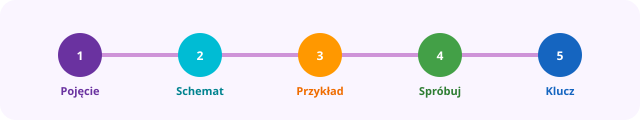
Twoja ścieżka na każdej stronie
Kolejność
1Przeczytaj
Pojęcie
2Zobacz
Schemat
3Przerób
Przykład
4Zrób
Spróbuj
5Sprawdź
Klucz (42)
Jeśli wynik dziwny → wróć do schematu na tej stronie.
Mapa poziomów
1POZIOM 1 ODKRYWCAkl. 1–3 · rozpoznawanie, obwód prosty, symetria
2POZIOM 2 UCZEŃkl. 4 · wielokąty, kąty, obwód
3POZIOM 3 MŁODY MISTRZkl. 5 · rodzaje kątów, trójkąty, czworokąty
4POZIOM 4 EKSPERTkl. 5–6 · pola figur, figury złożone, kratka
5POZIOM 5 ARCYMISTRZkl. 7–8 · Pitagoras, koło, egzamin
Pojęcie
Co to jest figura płaska?
Figura płaska leży na płaszczyźnie (jak na kartce). Ma długość i szerokość, ale nie ma grubości (to nie bryła).
Uwaga
Bryły (sześcian, kula…) są w osobnej książce MISTRZ BRYŁ.
Zawsze sprawdzaj odpowiedzi w Kluczu (str. 42).
💡
ZAPAMIĘTAJ! Najpierw zrozum pojęcie i schemat, potem licz. Jedna strona = jedna myśl.
POZIOM 1 ODKRYWCA
KLASY 1–3
STRONA 03
EduMost
MISTRZ FIGUR PŁASKICH
FIGURY WOKÓŁ NAS
CEL: Rozpoznać 4 podstawowe figury w otoczeniu.
Pojęcie
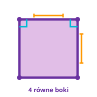
KWADRAT
4 równe boki, 4 kąty proste
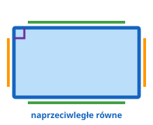
PROSTOKĄT
4 kąty proste; boki naprzeciwległe równe
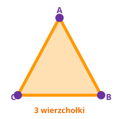
TRÓJKĄT
3 boki, 3 wierzchołki
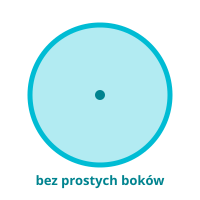
KOŁO
okrągły kształt „wypełniony”
Przykład krokami
1
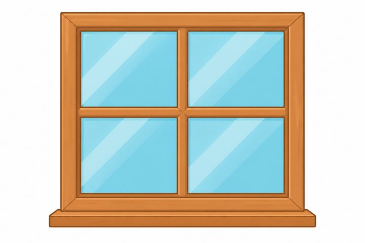
okno → prostokąt
2
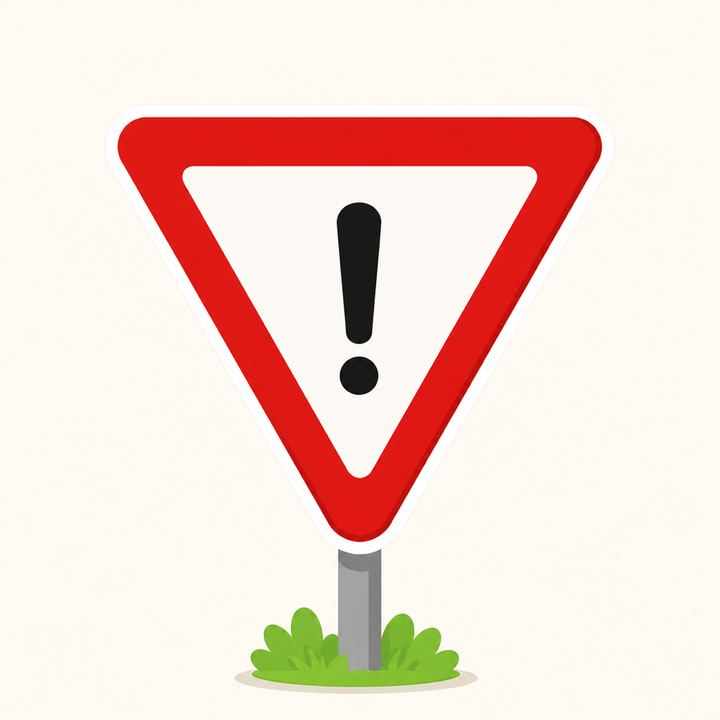
znak „ustąp” → trójkąt
3
zegar → koło
Po ludzku
Jesteś detektywem figur!
Patrzysz na pokój i szukasz kształtów — bez linijki.
Który przedmiot najbardziej przypomina kwadrat?
Przedmiot nie jest idealny? Nie szkodzi — szukamy kształtu, który najbardziej przypomina figurę.
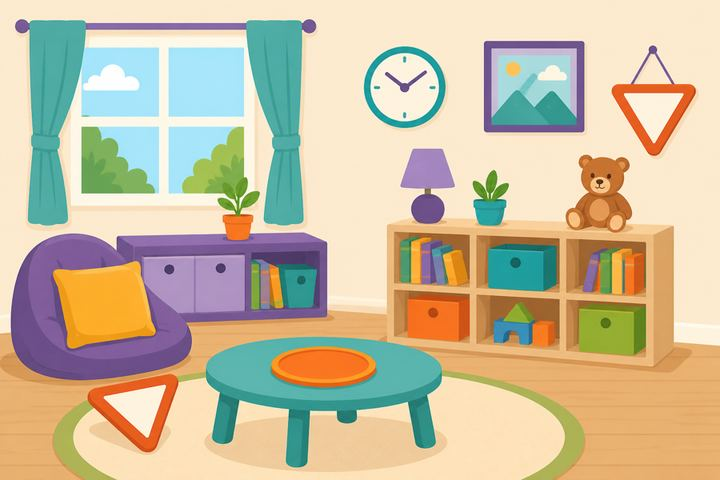
okno · zegar · obraz · poduszka · talerz
Spróbuj
2Ile wierzchołków ma trójkąt?
3Wypisz 2 rzeczy w domu o kształcie kwadratu: /
ZAPAMIĘTAJ! Figury są wszędzie — uczysz się je rozpoznawać, nie tylko rysować.
POZIOM 1 ODKRYWCA
KLASY 1–3
STRONA 04
EduMost
MISTRZ FIGUR PŁASKICH
KWADRAT I PROSTOKĄT
CEL: Odróżnić kwadrat od prostokąta.
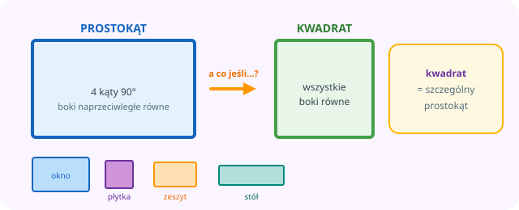
Kwadrat = szczególny prostokąt
Pojęcie
Prostokąt ma 4 kąty po 90°. Boki naprzeciwległe są równe.
Kwadrat to specjalny prostokąt: wszystkie 4 boki równe.
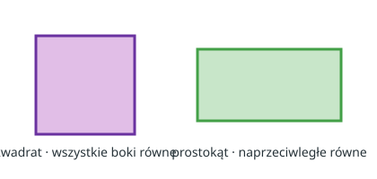
Jak rozpoznać?
1. Czy wszystkie kąty są proste?
2. Czy wszystkie boki są równe?
tak → KWADRAT
nie, ale kąty proste → PROSTOKĄT
- 4 kąty proste
- Boki naprzeciwległe równe
- Wszystkie boki równe — tylko w kwadracie
Przykład krokami
1Boki 5, 5, 5, 5 i kąty proste → kwadrat.
2Boki 8, 3, 8, 3 i kąty proste → prostokąt (nie kwadrat).
3Dłuższe i krótsze boki? To nadal może być prostokąt.
Po ludzku
Wyobraź sobie…
Okno, płytka, zeszyt, stół — często wyglądają jak prostokąt: proste kąty, ale boki bywają różne.
Zauważ…
Kwadrat jest prostokątem, ale ma dodatkową cechę: wszystkie jego boki są równe.
A co jeśli…?
Prostokąt ma wszystkie boki takie same? Wtedy to kwadrat — specjalny prostokąt.
Spróbuj
1P/F: Każdy kwadrat jest prostokątem. PF
2P/F: Każdy prostokąt jest kwadratem. PF
3Narysuj prostokąt, który nie jest kwadratem.
💡
ZAPAMIĘTAJ! Każdy kwadrat jest prostokątem. Nie każdy prostokąt jest kwadratem.
POZIOM 1 ODKRYWCA
KLASY 1–3
STRONA 05
EduMost
MISTRZ FIGUR PŁASKICH
TRÓJKĄT I KOŁO (WSTĘP)
CEL: Poznać trójkąt i koło bez wzorów π.
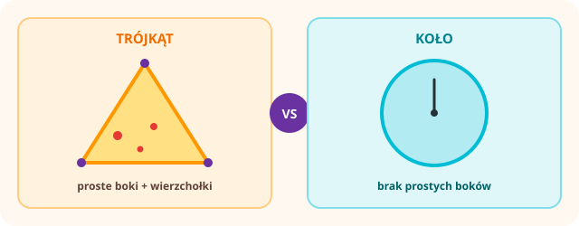
Proste boki i wierzchołki vs gładki brzeg
Pojęcie
Trójkąt — 3 boki, 3 wierzchołki, 3 kąty.
Koło — figura okrągła z wnętrzem (jak naleśnik). Brzeg koła to linia zwana później okręgiem (str. 35).
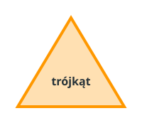
trójkąt ABC
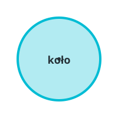
koło ze środkiem
Uwaga · kl. 1–3
Na razie mówimy „kształt koła”. Wzory z π poznasz w klasie 8.
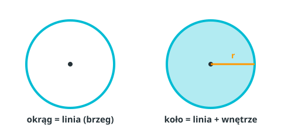
Przykład
1Znak drogowy albo kawałek pizzy → często trójkąt.
2Talerz, zegar, moneta → przypominają koło.
3Trójkąt ma proste boki. Koło — nie.
Po ludzku
Wyobraź sobie…
Bierzesz trójkątny kawałek pizzy. Palcem jedziesz wzdłuż brzegu — trzy proste odcinki.
Zauważ…
Na talerzu albo tarczy zegara nie ma „prostych boków”. Brzeg idzie płynnie dookoła — jak pętla.
A co jeśli…?
Piłka jest bryłą (3D). Ale jej cień albo spód puszki na kartce wygląda jak koło.
Spróbuj
2P/F: Koło ma proste boki. PF
3Zakreśl w pokoju 1 rzecz o kształcie koła.
💡
ZAPAMIĘTAJ! Trójkąt = 3. Koło nie ma prostych boków.
POZIOM 1 ODKRYWCA
KLASY 1–3
STRONA 06
EduMost
MISTRZ FIGUR PŁASKICH
BOKI I WIERZCHOŁKI
CEL: Nazwać części wielokąta.
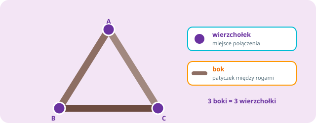
Patyczek = bok · połączenie = wierzchołek
Pojęcie
Wierzchołek — punkt, w którym spotykają się boki („róg”).
Bok — odcinek między dwoma sąsiednimi wierzchołkami.
Przykład krokami
Kwadrat ABCD:
- wierzchołki: A, B, C, D → 4
- boki: AB, BC, CD, DA → 4
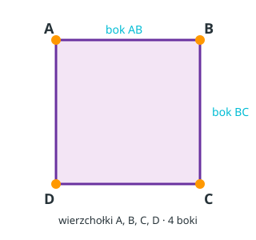
Po ludzku
Wyobraź sobie…
Budujesz figurę z patyczków — jak mały domek na stole.
Zauważ…
Miejsce, gdzie spotykają się dwa patyczki = wierzchołek.
Sam patyczek między sąsiadami = bok.
A co jeśli…?
Masz 5 patyczków i zamykasz figurę? Dostajesz 5 boków i 5 wierzchołków.
Reguła
Wielokąt o n bokach ma n wierzchołków.
Spróbuj
1Prostokąt: wierzchołków, boków
2Pięciokąt: wierzchołków, boków
3Narysuj trójkąt i podpisz wierzchołki A, B, C.
💡
ZAPAMIĘTAJ! Liczba boków = liczba wierzchołków.
POZIOM 1 ODKRYWCA
KLASY 1–3
STRONA 07
EduMost
MISTRZ FIGUR PŁASKICH
CO TO JEST OBWÓD?
CEL: Zrozumieć obwód jako „długość dookoła”.
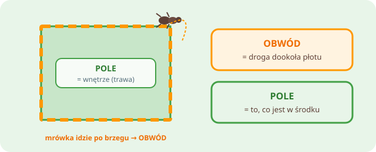
Obwód = droga dookoła · Pole = wnętrze
Pojęcie
Obwód = suma długości wszystkich boków.
To długość ścieżki wokół figury (np. długość płotu).
Przykład krokami
Kwadrat o boku 5 cm:
O = 5 + 5 + 5 + 5
O = 20 cm
Albo krócej: O = 4 · 5 = 20 cm
Po ludzku
Wyobraź sobie…
Mrówka idzie dookoła ogrodzenia. Jej droga wokół — to właśnie obwód.
Zauważ…
Obwód = wokół. Pole = wnętrze (jak trawnik w środku).
A co jeśli…?
Mylisz „dookoła” z „w środku”? Sprawdź: obwód to płot, pole to trawa.
Uwaga
Obwód to NIE wnętrze figury. Wnętrze mierzymy POLEM (poziom 4).
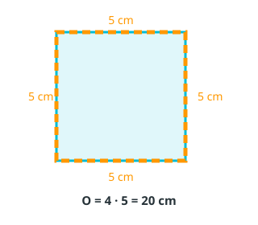
Spróbuj
1Trójkąt 3, 4, 5 cm. O = cm
2Prostokąt 6×4 cm. O = 6+4+6+4 = cm
3P/F: Obwód to „wnętrze” figury. PF
💡
ZAPAMIĘTAJ! Obwód = obejdź figurę i zsumuj boki. Jednostki: mm, cm, m.
POZIOM 1 ODKRYWCA
KLASY 1–3
STRONA 08
EduMost
MISTRZ FIGUR PŁASKICH
WZORY NA OBWÓD
CEL: Używać gotowych wzorów dla kwadratu i prostokąta.
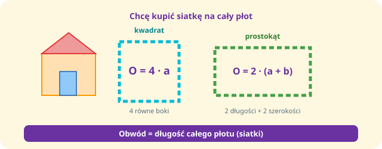
Siatka na płot → wzory 4·a oraz 2·(a+b)
Pojęcie · wzory
Kwadrat (bok a): O = 4 · a
Prostokąt (a, b): O = 2 · (a + b)
Co oznaczają litery?
- a — bok kwadratu albo jeden bok prostokąta
- b — drugi bok prostokąta
Przykład krokami
Prostokąt 8 cm × 3 cm:
O = 2 · (8 + 3) = 2 · 11 = 22 cm
Po ludzku
W życiu spotykasz to, gdy…
Masz kwadratowe ogrodzenie i chcesz kupić siatkę na cały płot. Musisz znać drogę dookoła.
Zauważ…
Wzór to skrót: nie dodajesz boków po kolei, tylko liczysz sprytniej.
Pomyśl o…
Kwadrat → cztery równe boki → 4 · a. Prostokąt → dwa razy (długość + szerokość).
Spróbuj
1Kwadrat a = 7 cm. O = cm
2Prostokąt 8 cm × 3 cm. O = cm
3Kwadratowe ogrodzenie, bok 10 m. Ile metrów siatki? m
💡
ZAPAMIĘTAJ! Kwadrat → ×4. Prostokąt → 2(a+b).
POZIOM 1 ODKRYWCA
KLASY 1–3
STRONA 09
EduMost
MISTRZ FIGUR PŁASKICH
SYMETRIA OSIOWA
CEL: Zrozumieć oś symetrii i odbicie lustrzane.
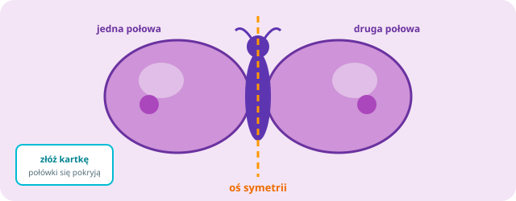
Oś symetrii jak lustro — połówki się pokrywają
Pojęcie
Oś symetrii — linia „złożenia”; po obu stronach figura wygląda tak samo.
Odbicie lustrzane — druga połowa jak w lustrze.
Przykład krokami
Kwadrat ma 4 osie (przez środki boków i przez przekątne).
Koło ma nieskończenie wiele osi (każda średnica).
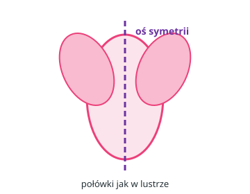
motyl
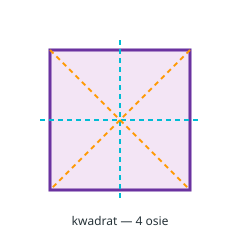
4 osie
Po ludzku
Wyobraź sobie…
Figura ma niewidzialne lustro pośrodku. Jedna połowa wygląda jak druga — jak skrzydła motyla.
Możesz to sprawdzić tak…
Złóż kartkę dokładnie wzdłuż osi. Czy połówki się nakładają?
A co jeśli…?
Patrzysz w lustro w łazience — to też odbicie. Oś to „linia lustra” na rysunku.
Spróbuj
1Dorysuj drugą połowę motyla (oś pionowa).
2Ile osi symetrii ma kwadrat?
3P/F: Koło ma nieskończenie wiele osi symetrii. PF
💡
ZAPAMIĘTAJ! Symetria = lustrzane odbicie względem osi.
STRONA 11
EduMost
MISTRZ FIGUR PŁASKICH
PUNKT, ODCINEK, PROSTA, PÓŁPROSTA
CEL: Poznać podstawy rysunku geometrycznego przed kątami.
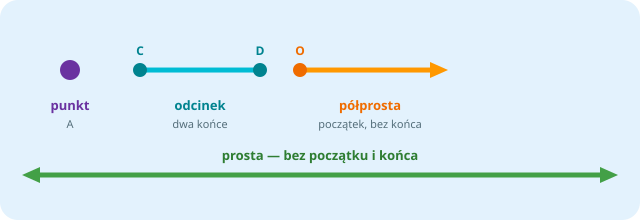
Rodzina linii — różnią się końcami
Pojęcie
Punktmiejsce bez rozmiaru (litera: A)
Odcinek ABczęść prostej między A i B; ma długość
Prostanieskończona w obie strony
Półprostazaczyna się w punkcie i idzie w jedną stronę
Przykład krokami
Bok wielokąta to zawsze odcinek (ma dwa końce = wierzchołki).
Po ludzku
Wyobraź sobie…
Punkt to jak kropka od ołówka — miejsce, ale bez „grubości”.
Zauważ…
Odcinek ma dwa końce (jak patyczek). Prosta idzie w obie strony bez końca.
A co jeśli…?
Rysujesz bok kwadratu — zawsze robisz odcinek, nie nieskończoną prostą.
Spróbuj
1Narysuj odcinek CD długości 5 cm.
2P/F: Odcinek ma dwa końce. PF
3P/F: Prosta ma początek i koniec. PF
💡
ZAPAMIĘTAJ! Odcinek = kawałek prostej z dwoma końcami.
STRONA 12
EduMost
MISTRZ FIGUR PŁASKICH
WIELOKĄTY
CEL: Wiedzieć, co jest wielokątem, a co nie.
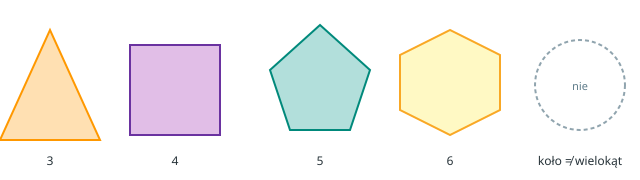
Wielokąt = figura z odcinków zamknięta
Pojęcie
Wielokąt — figura zamknięta zbudowana z odcinków prostych.
| Figura | Boki | Wierzchołki |
|---|
| Trójkąt | 3 | 3 |
| Czworokąt | 4 | 4 |
| Pięciokąt | 5 | 5 |
| Sześciokąt | 6 | 6 |
Uwaga
Koło nie jest wielokątem — nie ma prostych boków.
Przykład krokami
1Znak STOP (ośmiokąt) — proste boki → wielokąt.
2Dach domu (trójkąt) — 3 odcinki → wielokąt.
3Talerz (koło) — brak prostych boków → nie wielokąt.
Po ludzku
Wyobraź sobie…
Wycinasz z kartonu dom z prostych krawędzi — to wielokąt.
Zauważ…
Koło nie da się złożyć z prostych patyczków — więc to nie wielokąt.
Spójrz na…
Znak stop, dach, drzwi — ile prostych boków?
Spróbuj
2P/F: Koło to wielokąt. PF
💡
ZAPAMIĘTAJ! Wielokąt = proste boki. Koło ≠ wielokąt.
STRONA 13
EduMost
MISTRZ FIGUR PŁASKICH
KĄT
CEL: Zrozumieć kąt w wierzchołku wielokąta.
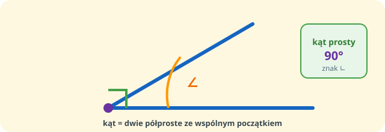
Kąt = dwie półproste ze wspólnym wierzchołkiem
Pojęcie
Kąt — otwarcie między dwoma ramionami (półprostymi) o wspólnym początku.
W wielokącie kąt wewnętrzny jest przy wierzchołku.
Kąt prosty
Ma miarę 90° (symbol ∟).
W kwadracie i prostokącie każdy kąt = 90°.
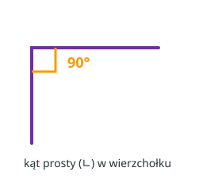
Przykład krokami
1Otwórz zeszyt — róg kartki to kąt prosty.
2Czworokąt ma 4 kąty wewnętrzne (przy 4 wierzchołkach).
3Trójkąt ma 3 kąty — po jednym przy każdym wierzchołku.
Po ludzku
Wyobraź sobie…
Otwierasz książkę — im szerzej, tym większy kąt między okładkami.
Zauważ…
Narożnik pokoju to często kąt prosty — jak litera L (∟).
Pomyśl o…
W kwadracie każdy róg „stoi prosto” — po 90°.
Spróbuj
1Ile kątów wewnętrznych ma czworokąt?
💡
ZAPAMIĘTAJ! W wielokącie n-kątnym jest n kątów wewnętrznych.
STRONA 14
EduMost
MISTRZ FIGUR PŁASKICH
RÓWNOLEGŁE I PROSTOPADŁE
CEL: Rozróżnić równoległe i prostopadłe.
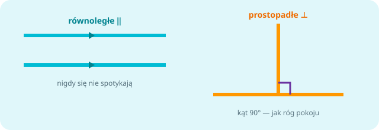
‖ nie spotykają się · ⊥ tworzą 90°
Pojęcie
Równoległe (‖) — nigdy się nie spotykają (jak szyny).
Prostopadłe (⊥) — tworzą kąt 90° (jak róg pokoju).
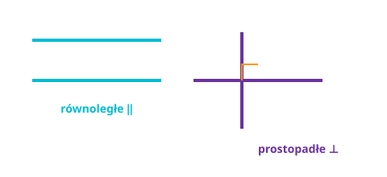
Przykład krokami
- boki naprzeciwległe są równoległe ‖
- boki sąsiednie są prostopadłe ⊥
Po ludzku
Wyobraź sobie…
Szyny tramwajowe idą obok siebie i się nie spotykają — równoległe ‖.
Zauważ…
Róg kartki: dwa boki spotykają się pod kątem prostym — prostopadłe ⊥.
Spójrz na…
W prostokącie: naprzeciwległe ‖, sąsiednie ⊥.
Spróbuj
1W prostokącie boki naprzeciwległe są _____
2Narysuj dwie proste równoległe.
3Narysuj dwie proste prostopadłe.
💡
ZAPAMIĘTAJ! Prostokąt: naprzeciwległe ‖, sąsiednie ⊥.
STRONA 15
EduMost
MISTRZ FIGUR PŁASKICH
OBWÓD TRÓJKĄTA
CEL: Liczyć obwód trójkąta wzorem.
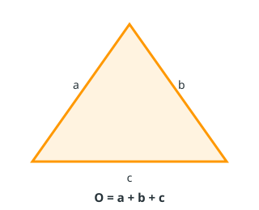
O = a + b + c
Pojęcie
O = a + b + c
a, b, c — długości boków.
Przykład krokami
7 + 8 + 9 = 24 cm
Równoboczny bok 6 cm: O = 3 · 6 = 18 cm
Po ludzku
Wyobraź sobie…
Idziesz dookoła trójkątnego ogródka — liczysz trzy boki.
Zauważ…
Obwód trójkąta to po prostu a + b + c.
A co jeśli…?
Trójkąt równoboczny? Wszystkie boki równe → O = 3 · a.
Spróbuj
1Trójkąt 5, 12, 13 cm. O = _____ cm
2Równoboczny bok 6 cm. O = _____ cm
3Ogródek: 10 m + 12 m + 15 m. O = _____ m
💡
ZAPAMIĘTAJ! Równoboczny → O = 3a.
STRONA 16
EduMost
MISTRZ FIGUR PŁASKICH
MISJA UCZNIA
CEL: Sprawdź, ile już umiesz.
Misja
2Kwadrat — kąt w wierzchołku = _____°
3Prostokąt 10×4 cm. O = _____ cm
4Trójkąt 6, 8, 10 cm. O = _____ cm
5P/F: Proste równoległe się przecinają. _____
UCZEŃ FIGUR PŁASKICH
Odpowiedzi: str. 42
Sowa mówiSprawdź klucz. Błąd? Wróć do strony tematu.
💡
ZAPAMIĘTAJ! Sprawdź odpowiedzi w kluczu (str. 42).
POZIOM 3 MŁODY MISTRZ
KLASA 5
STRONA 17
EduMost
MISTRZ FIGUR PŁASKICH
RODZAJE KĄTÓW
CEL: Odróżnić ostry, prosty, rozwarty.
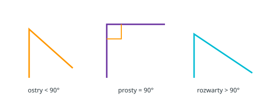
Ostry · prosty · rozwarty
Pojęcie
| Kąt | Miara | Jak zapamiętać |
|---|
| ostry | < 90° | „ciaśniejszy” niż prosty |
| prosty | = 90° | róg kartki / ∟ |
| rozwarty | > 90° i < 180° | „szerszy” niż prosty |
| półpełny | = 180° | jak prosta |
| pełny | = 360° | pełny obrót |
Przykład krokami
145° — ciaśniejszy niż róg kartki → ostry.
290° — jak narożnik zeszytu → prosty.
3120° — szerszy niż prosty, ale nie półprosta → rozwarty.
Po ludzku
Wyobraź sobie…
Mały kąt jak dziób ptaka — ostry. Szeroki jak otwarte drzwi — rozwarty.
Zauważ…
Prosty = róg zeszytu (90°). Półpełny = prosta linia (180°).
Spójrz na…
Zegar: wskazówki tworzą różne kąty w ciągu dnia.
💡
ZAPAMIĘTAJ! Ostry < 90° = prosty < rozwarty.
POZIOM 3 MŁODY MISTRZ
KLASA 5
STRONA 18
EduMost
MISTRZ FIGUR PŁASKICH
KĄTY PRZYLEGŁE I WIERZCHOŁOWE
CEL: Poprawnie rozpoznać pary kątów.
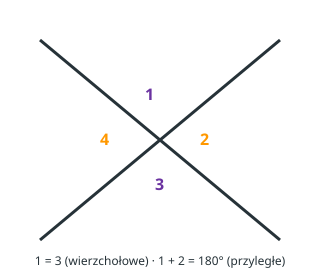
Przyległe / wierzchołkowe
Pojęcie
Kąty przyległe — wspólny wierzchołek i jedno wspólne ramię; pozostałe ramiona tworzą prostą. Suma = 180°.
Kąty wierzchołowe — leżą naprzeciw siebie przy przecięciu dwóch prostych. Są równe.
Przykład krokami
Przyległe: 70° + ? = 180° → ? = 110°
Wierzchołowy = 55° → drugi = 55°
Po ludzku
Wyobraź sobie…
Dwa kąty przy jednej prostej jak dwa kawałki pizzy z jednego cięcia — razem 180°.
Zauważ…
Przyległe „składają się” w prostą. Wierzchołowe są naprzeciwko — równe.
A co jeśli…?
Znasz jeden kąt przyległy? Drugi = 180° − ten.
Spróbuj
2Wierzchołowy = 55°. Drugi = _____°
3P/F: Kąty wierzchołowe są równe. _____
💡
ZAPAMIĘTAJ! Przyległe → suma 180°. Wierzchołowe → równe.
POZIOM 3 MŁODY MISTRZ
KLASA 5
STRONA 19
EduMost
MISTRZ FIGUR PŁASKICH
RODZAJE TRÓJKĄTÓW
CEL: Klasyfikować trójkąty według boków i kątów.
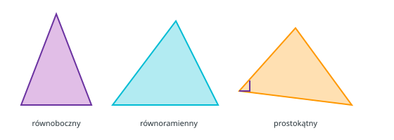
Klasyfikacja trójkątów
Pojęcie · boki
- równoboczny — 3 boki równe (kąty po 60°)
- równoramienny — 2 boki równe
- różnoboczny — wszystkie boki różne
Pojęcie · kąty
- ostrokątny — wszystkie kąty < 90°
- prostokątny — jeden kąt = 90°
- rozwartokątny — jeden kąt > 90°
Po ludzku
Wyobraź sobie…
Trójkąt jak kanapka: patrzysz na boki albo na kąty.
Zauważ…
Równoboczny ma wszystkie boki równe. Równoramienny — dwa równe.
Spójrz na…
Dach domu często wygląda jak trójkąt równoramienny.
Spróbuj
23 boki po 5 cm → trójkąt
3P/F: Każdy trójkąt równoboczny jest ostrokątny. PF
💡
ZAPAMIĘTAJ! Równoboczny = zawsze ostrokątny (60°+60°+60°).
POZIOM 3 MŁODY MISTRZ
KLASA 5
STRONA 20
EduMost
MISTRZ FIGUR PŁASKICH
SUMA KĄTÓW TRÓJKĄTA = 180°
CEL: Znajdować brakujący kąt.
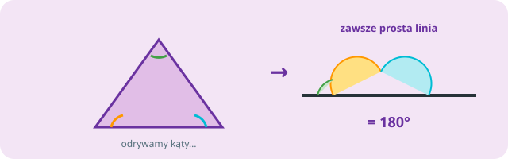
Suma kątów trójkąta = 180°
Pojęcie
Suma kątów wewnętrznych trójkąta = 180°
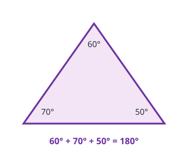
Przykład krokami
Kąty 60° i 70°. Trzeci:
180° − 60° − 70° = 50°
Po ludzku
Wyobraź sobie…
Trzy kąty w trójkącie zawsze „dokładają się” do półobrotu — 180°.
Możesz to sprawdzić tak…
Wytnij trójkąt, oderwij rogi i złóż je przy prostej — tworzą prostą.
A co jeśli…?
Znasz dwa kąty? Trzeci = 180° − (suma dwóch).
Spróbuj
1Kąty 80° i 65°. Trzeci = _____°
2Równoramienny: kąty przy podstawie po 70°. Kąt przy wierzchołku = _____°
3P/F: Suma kątów trójkąta to 360°. _____
💡
ZAPAMIĘTAJ! Brakujący kąt = 180° − suma dwóch znanych.
POZIOM 3 MŁODY MISTRZ
KLASA 5
STRONA 21
EduMost
MISTRZ FIGUR PŁASKICH
NIERÓWNOŚĆ TRÓJKĄTA
CEL: Sprawdzić, czy z trzech odcinków powstanie trójkąt.
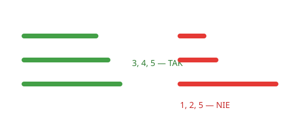
a + b > c
Pojęcie
a < b + c
b < a + c
c < a + b
Przykład krokami
3, 4, 5 → 5 < 3+4 → TAK
1, 2, 5 → 5 < 1+2? → NIE
Po ludzku
Wyobraź sobie…
Z patyczków 2 cm, 3 cm i 10 cm nie zbudujesz trójkąta — najdłuższy jest za długi.
Zauważ…
Suma dwóch krótszych musi być większa niż najdłuższy bok.
Spójrz na…
To jak przejść drogą dookoła: dwa odcinki muszą „przykryć” trzeci.
Sposób szybki
Sprawdź najpierw najdłuższy bok:
najdłuższy < suma dwóch pozostałych.
Spróbuj
3Równoboczny bok 7 cm. O = _____ cm
💡
ZAPAMIĘTAJ! Najdłuższy bok musi być krótszy niż suma dwóch pozostałych.
POZIOM 3 MŁODY MISTRZ
KLASA 5
STRONA 22
EduMost
MISTRZ FIGUR PŁASKICH
CZWOROKĄTY
CEL: Poznać rodzinę czworokątów bez mieszania definicji.
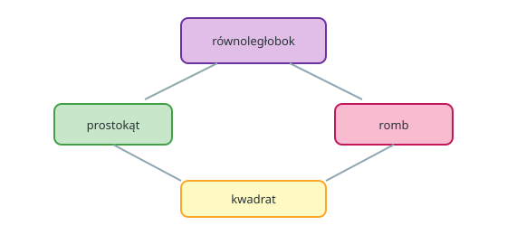
Rodzina czworokątów
Pojęcie
- Równoległobok — naprzeciwległe boki równoległe i równe.
- Prostokąt — równoległobok z 4 kątami prostymi.
- Romb — równoległobok z 4 równymi bokami.
- Kwadrat — prostokąt z 4 równymi bokami.
- Trapez — dokładnie jedna para boków równoległych.
Ważne
Przy tej definicji trapezu: kwadrat nie jest trapezem.
Kwadrat jest prostokątem i rombem.
Przykład krokami
1Kwadrat ma 4 kąty proste i 4 równe boki → jest prostokątem i rombem.
2Romb bez kątów prostych → nie jest kwadratem.
3Trapez szkolny: dokładnie jedna para boków ‖.
Po ludzku
Wyobraź sobie…
Czworokąty to rodzina: kwadrat, prostokąt, romb, równoległobok, trapez…
Zauważ…
Kwadrat ma wszystkie cechy „specjalne”. Trapez szkolny — dokładnie jedna para boków ‖.
Pomyśl o…
Drzwi = prostokąt. Znak drogowy romb = „uwaga”.
Spróbuj
1Kwadrat jest jednocześnie: prostokątem / rombem / oboma?
2P/F: Każdy romb jest kwadratem. PF
3Narysuj trapez. Zaznacz na nim obie podstawy (boki równoległe).
💡
ZAPAMIĘTAJ! Kwadrat ⊂ prostokąt ⊂ równoległobok. Trapez — osobno (1 para ‖).
POZIOM 3 MŁODY MISTRZ
KLASA 5
STRONA 23
EduMost
MISTRZ FIGUR PŁASKICH
WYSOKOŚĆ TRÓJKĄTA
CEL: Zrozumieć wysokość przed polem.
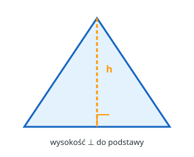
Wysokość ⊥ do podstawy
Pojęcie
Wysokość h — odcinek prostopadły z wierzchołka do prostej zawierającej wybrany bok (podstawę).
Ważne
- Trójkąt ma 3 wysokości.
- Wysokość nie zawsze leży wewnątrz (w rozwartokątnym może wypadać na zewnątrz).
Przykład krokami
1. Wybierz podstawę (bok).
2. Z przeciwległego wierzchołka poprowadź odcinek ⊥ do podstawy (lub jej przedłużenia).
3. Ten odcinek to wysokość h — potem we wzorze: P = ½ · a · h.
Po ludzku
Wyobraź sobie…
Wysokość to „słupek” prostopadły od wierzchołka do podstawy.
Zauważ…
Podstawa to bok, na którym „stoi” figura w zadaniu.
A co jeśli…?
W trójkącie prostokątnym nogi kąta prostego mogą być wysokościami.
Spróbuj
1Zaznacz wysokość do wybranej podstawy.
2P/F: Wysokość zawsze leży wewnątrz trójkąta. PF
3Do wzoru na pole potrzebujesz: podstawę a i wysokość h.
💡
ZAPAMIĘTAJ! Wysokość ⊥ do podstawy. Potem: P = ½ · a · h.
POZIOM 3 MŁODY MISTRZ
KLASA 5
STRONA 24
EduMost
MISTRZ FIGUR PŁASKICH
MISJA MŁODEGO MISTRZA
CEL: Sprawdź, ile już umiesz.
Misja
1Kąt o mierze 110° jest: ostry / prosty / rozwarty?
2W trójkącie dwa kąty mają 50° i 60°. Trzeci kąt = °
3Czy z boków 7, 10 i 20 można zbudować trójkąt? Tak / Nie
4Romb, który ma 4 kąty proste, to
5Jeden kąt przyległy ma 125°. Drugi = °
MŁODY MISTRZ FIGUR PŁASKICH
Odpowiedzi: str. 42
Sowa mówiSprawdź klucz. Błąd? Wróć do strony tematu.
💡
ZAPAMIĘTAJ! Sprawdź odpowiedzi w kluczu (str. 42).
POZIOM 4 EKSPERT
KLASY 5–6
STRONA 25
EduMost
MISTRZ FIGUR PŁASKICH
CO TO JEST POLE?
CEL: Odróżnić pole od obwodu i poznać jednostki.
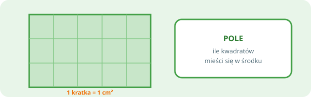
Pole = ile kwadratów w środku
Pojęcie
Pole — miara powierzchni wewnątrz figury.
| Obwód | Pole |
|---|
| Co mierzy? | dookoła | wnętrze |
| Jednostki | cm, m… | cm², m²… |
Jednostki
1 cm² = 100 mm²
1 dm² = 100 cm²
1 m² = 10 000 cm²
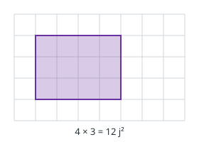
Przykład krokami
Prostokąt na kratce 4×3: pole = 12 kwadratów jednostkowych = 12 j².
Po ludzku
Wyobraź sobie…
Pole to ile farby potrzebujesz, żeby pomalować wnętrze figury.
Zauważ…
Obwód = płot (dookoła). Pole = trawnik (w środku).
Spójrz na…
Kafelki na podłodze — liczysz, ile ich wchodzi w prostokąt.
Spróbuj
1Policz pole prostokąta na kratce 5 × 2. P = j²
3P/F: Obwód i pole oznaczają to samo. PF
💡
ZAPAMIĘTAJ! Obwód (cm) ≠ pole (cm²).
POZIOM 4 EKSPERT
KLASY 5–6
STRONA 26
EduMost
MISTRZ FIGUR PŁASKICH
POLE PROSTOKĄTA I KWADRATU
CEL: Stosować wzory na pole.
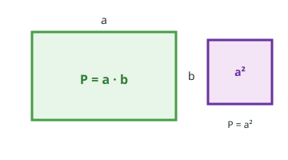
P = a · b
Pojęcie
Prostokąt: P = a · b
Kwadrat: P = a · a = a²
Przykład krokami
8 · 5 = 40 cm²
6² = 36 cm²
Po ludzku
Wyobraź sobie…
Pokój 4 m × 3 m: pole = długość · szerokość.
Zauważ…
Kwadrat to specjalny prostokąt — P = a · a = a².
W życiu…
Kupujesz wykładzinę — liczysz m², nie metry płotu.
Spróbuj
1Prostokąt 8×5. P = _____ cm²
2Kwadrat a = 6. P = _____ cm²
3P = 24 cm², jeden bok 4 cm. Drugi bok = _____ cm
💡
ZAPAMIĘTAJ! Prostokąt = długość × szerokość. Kwadrat = bok².
POZIOM 4 EKSPERT
KLASY 5–6
STRONA 27
EduMost
MISTRZ FIGUR PŁASKICH
POLE TRÓJKĄTA
CEL: Liczyć pole trójkąta.
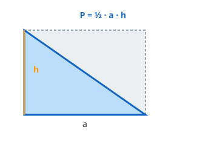
P = ½ · a · h
Pojęcie
P = ½ · a · h
a — podstawa, h — wysokość do tej podstawy.
Przykład krokami
a = 10, h = 6 → P = ½ · 10 · 6 = 30 cm²
Przyprostokątne 6 i 8 → P = ½ · 6 · 8 = 24 cm²
Po ludzku
Wyobraź sobie…
Trójkąt to „połowa” prostokąta o tej samej podstawie i wysokości.
Zauważ…
Dlatego P = (a · h) / 2.
A co jeśli…?
Ta sama podstawa i wysokość → to samo pole, nawet gdy trójkąt „pochylony”.
Spróbuj
1Podstawa a = 8 cm, wysokość h = 5 cm. Pole P = cm²
2Pole P = 24 cm², podstawa a = 8 cm. Wysokość h = cm
3Trójkąt prostokątny: przyprostokątne 6 cm i 8 cm. P = cm²
💡
ZAPAMIĘTAJ! Zawsze bierz wysokość prostopadłą do wybranej podstawy.
POZIOM 4 EKSPERT
KLASY 5–6
STRONA 28
EduMost
MISTRZ FIGUR PŁASKICH
POLA: RÓWNOLEGŁOBOK, ROMB, TRAPEZ
CEL: Poznać wzory na pozostałe pola.
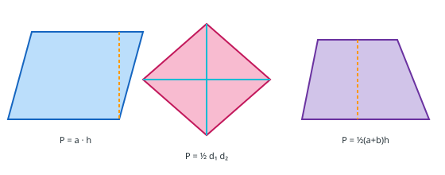
Wzory na pola
Pojęcie
Równoległobok: P = a · h
Romb: P = a · h
lub P = ½ · d₁ · d₂
Trapez: P = ½ · (a + b) · h
Przykład krokami
Trapez 6 i 10, h=4 → P = ½·16·4 = 32
Romb d₁=8, d₂=6 → P = ½·8·6 = 24
Po ludzku
Wyobraź sobie…
Równoległobok jak przesunięty prostokąt — pole nadal podstawa · wysokość.
Zauważ…
Romb: możesz użyć przekątnych. Trapez: średnia podstaw · wysokość.
Pomyśl o…
Najpierw znajdź wysokość — to „prostopadły słupek”, nie skośny bok.
Spróbuj
1Równoległobok a=12, h=5. P = _____
2Trapez 6 i 10, h=4. P = _____
3Romb d₁=8, d₂=6. P = _____
💡
ZAPAMIĘTAJ! Trapez = średnia podstaw × wysokość.
POZIOM 4 EKSPERT
KLASY 5–6
STRONA 29
EduMost
MISTRZ FIGUR PŁASKICH
FIGURY ZŁOŻONE
CEL: Podzielić trudną figurę na proste.
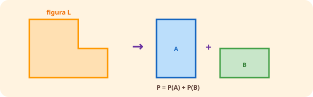
Rozbij na proste części i dodaj pola
Pojęcie · metoda
- Podziel na prostokąty/trójkąty i dodaj pola.
- Albo uzupełnij do większej figury i odejmij wycięcie.
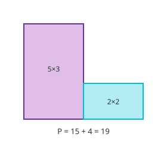
Przykład krokami
1Litera L = prostokąt 5×3 + prostokąt 2×2 → P = 15 + 4 = 19.
2Kwadrat 10×10 z wyciętym 3×3 → P = 100 − 9 = 91.
3Zawsze podpisuj części — łatwiej nie zgubić liczby.
Po ludzku
Wyobraź sobie…
Dom z prostokąta + trójkątnego dachu — rozbij na znane figury.
Zauważ…
Pole złożone = suma (albo różnica) pól części.
Spójrz na…
Litera L z klocków — policz pełny prostokąt i odejmij brakujący.
Spróbuj
1Podziel figurę L na 2 prostokąty i oblicz pole.
2Kwadrat 10×10 − kwadrat 3×3. P =
3Na kratce policz pole figury złożonej (str. 30 pomoże).
💡
ZAPAMIĘTAJ! Trudna figura? Podziel na znane kawałki.
POZIOM 4 EKSPERT
KLASY 5–6
STRONA 30
EduMost
MISTRZ FIGUR PŁASKICH
FIGURY NA KRATCE
CEL: Liczyć pole i obwód na kratce 1 cm.
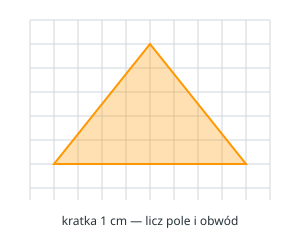
Liczenie na kratce 1 cm
Pojęcie · jak liczyć
- Pole = pełne kwadraty + połówki.
- Obwód = długość brzegu wzdłuż linii kratki.
- ‖ i ⊥ widać od razu na kratce.
Przykład krokami
Jeśli kratka ma 1 cm, to 1 kwadrat = 1 cm².
Policz pełne kwadraty, a „ukośne połówki” złóż w całości.
Po ludzku
Wyobraź sobie…
Kratka jak zeszyt w kratkę — każde oczko to 1 jednostka kwadratowa.
Zauważ…
Policz pełne kratki, a połówki złóż w całości.
A co jeśli…?
Figura wychodzi poza kratkę? Rozbij na części albo dobierz większą jednostkę.
Spróbuj
1Narysuj trójkąt na kratce. Podaj O i P.
2Narysuj równoległobok. Podaj P.
3Porównaj pola dwóch figur na tej samej kratce.
💡
ZAPAMIĘTAJ! Kratka 1 cm → 1 kwadrat = 1 cm².
POZIOM 4 EKSPERT
KLASY 5–6
STRONA 31
EduMost
MISTRZ FIGUR PŁASKICH
MISJA EKSPERTA
CEL: Sprawdź, ile już umiesz.
Misja
1Prostokąt 12×7. P = _____ cm²
2Kwadrat P = 49 cm². Bok = _____ cm
3Trójkąt a=10, h=6. P = _____ cm²
4Trapez podstawy 5 i 9, h=4. P = _____ cm²
5Obwód kwadratu 20 cm. Bok = _____ cm, P = _____ cm²
EKSPERT FIGUR PŁASKICH
Odpowiedzi: str. 42
Sowa mówiSprawdź klucz. Błąd? Wróć do strony tematu.
💡
ZAPAMIĘTAJ! Sprawdź odpowiedzi w kluczu (str. 42).
POZIOM 5 ARCYMISTRZ
KLASY 7–8
STRONA 32
EduMost
MISTRZ FIGUR PŁASKICH
TWIERDZENIE PITAGORASA
CEL: Najpierw kąt 90° i przeciwprostokątna c. Potem wzór.
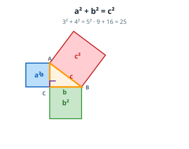
Kwadrat na c = suma kwadratów na a i b
Twierdzenie
a² + b² = c²
c — przeciwprostokątna (najdłuższy bok, naprzeciw kąta prostego).
a, b — przyprostokątne.
- Znajdź kąt prosty (□).
- Bok naprzeciw niego to c.
- Dopiero wtedy licz.
Przykład krokami
1Kąt prosty przy C → c naprzeciw C. a = 3, b = 4.
2a² + b² = 9 + 16 = 25. Szukamy c: c² = 25 → c = 5.
3Szukasz przyprostokątnej? Odejmij: b² = c² − a². Nie dodawaj, gdy c już znasz.
Po ludzku
Wyobraź sobie…
Kwadrat narysowany na c ma tyle samo pola, co dwa kwadraty na a i b razem.
Zauważ…
Szukasz c → dodaj kwadraty. Szukasz a albo b → odejmij od c².
Spójrz na…
Trójki: 3-4-5, 5-12-13, 8-15-17 i wielokrotności (6-8-10…).
Spróbuj
1W trójkącie prostokątnym przyprostokątne a = 6, b = 8. c =
2W trójkącie prostokątnym przeciwprostokątna c = 13, przyprostokątna a = 5. b =
3Boki 7, 10 i 12. Czy to trójkąt prostokątny? Tak / Nie. Najdłuższy bok stawiasz na c. Sprawdź: 7² + 10² ≟ 12²
💡
ZAPAMIĘTAJ! Najpierw kąt 90° i c (naprzeciw, najdłuższy). Trójki: 3-4-5, 5-12-13, 8-15-17.
POZIOM 5 ARCYMISTRZ
KLASY 7–8
STRONA 33
EduMost
MISTRZ FIGUR PŁASKICH
PITAGORAS W ŻYCIU
CEL: Zastosować wzór w zadaniach tekstowych.
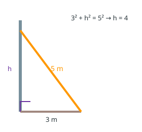
Drabina przy ścianie
Pojęcie
Najpierw znajdź kąt prosty, potem użyj: a² + b² = c².
Przykład krokami
1. Drabina
Drabina 5 m, baza 3 m od ściany:
3² + h² = 5²
9 + h² = 25
h = 4 m
2. Przekątna
Prostokąt 6×8:
√(36+64) = √100 = 10 cm
Po ludzku
Wyobraź sobie…
Drabina oparta o ścianę tworzy trójkąt prostokątny.
Zauważ…
Znasz dwie długości — trzecią liczysz Pitagorasem.
W życiu…
Telewizor „po przekątnej” — też c z a² + b² = c².
Spróbuj
1Drabina 5 m, baza 3 m. Wysokość = m
2Prostokąt 6×8. Przekątna = cm
3Przyprostokątne 5 cm (równoramienny prostokątny). Przeciwprostokątna = 5√2 cm
💡
ZAPAMIĘTAJ! Najpierw znajdź kąt prosty, potem Pitagorasa.
POZIOM 5 ARCYMISTRZ
KLASY 7–8
STRONA 34
EduMost
MISTRZ FIGUR PŁASKICH
FIGURY W UKŁADZIE WSPÓŁRZĘDNYCH
CEL: Liczyć długości: pion, poziom, ukos (Pitagoras).
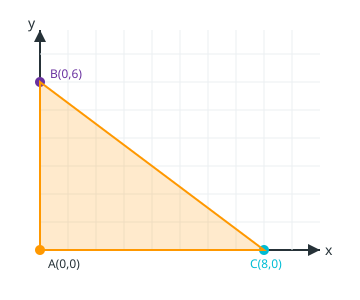
Ta sama x → pion; ta sama y → poziom; ukos → Pitagoras
Pojęcie · trzy wzory
Dwa punkty: A(x1, y1), B(x2, y2). Kreski |…| = różnica bez minusa (długość nie bywa ujemna).
- Pion (ta sama x): AB = |y2 − y1|
- Poziom (ta sama y): AB = |x2 − x1|
- Ukos: dorysuj pion i poziom — to przyprostokątne.
d² = (x2 − x1)² + (y2 − y1)²
To ten sam wzór a² + b² = c².
Przykład krokami
1A(1,1), B(1,5) — ta sama x → pion. AB = |yB − yA| = |5 − 1| = 4.
2A(1,1), C(4,1) — ta sama y → poziom. AC = |xC − xA| = |4 − 1| = 3.
3BC ukośny: d² = 3² + 4² = 25 → BC = 5.
Po ludzku
Pion
Nie zmieniasz x. Liczysz, o ile skoczyło y.
Poziom
Nie zmieniasz y. Liczysz, o ile skoczyło x.
Ukos
Z tych dwóch skoków budujesz trójkąt prostokątny i liczysz c.
Spróbuj
1Trójkąt ABC jest: ostrokątny / prostokątny / rozwartokątny?
2AB jest pionowy. AB = |yB − yA| =
3Oblicz ukośną BC (Pitagoras). BC =
💡
ZAPAMIĘTAJ! Ta sama x → pion |y2−y1|. Ta sama y → poziom |x2−x1|. Ukos → Pitagoras.
POZIOM 5 ARCYMISTRZ
KLASY 7–8
STRONA 35
EduMost
MISTRZ FIGUR PŁASKICH
KOŁO I OKRĄG
CEL: Rozróżnić koło i okrąg; stosować wzory.
Okrąg = linia · Koło = linia + wnętrze
Pojęcie
- Okrąg — linia (brzeg); wszystkie punkty w tej samej odległości od środka.
- Koło — figura złożona z okręgu i wnętrza.
- Promień r — od środka do punktu na okręgu.
- Średnica d — d = 2r.
Obwód okręgu: O = 2πr = πd
Pole koła: P = πr²
W szkole często: π ≈ 3,14.
Okrąg = linia · Koło = linia + wnętrze
Przykład krokami
r = 5 cm:
O ≈ 2 · 3,14 · 5 = 31,4 cm
P ≈ 3,14 · 25 = 78,5 cm²
Po ludzku
Wyobraź sobie…
Koło jak naleśnik (wnętrze). Okrąg jak obręcz (tylko brzeg).
Zauważ…
Od środka do brzegu wszędzie jest tak samo daleko — koło jest „równe we wszystkie strony”.
Pomyśl o…
π ≈ 3,14 — ile razy średnica mieści się w „drodze dookoła”.
Spróbuj
1r = 5. O ≈ _____ , P ≈ _____
3P/F: Koło to wielokąt. _____
💡
ZAPAMIĘTAJ! Okrąg = linia. Koło = linia + wnętrze. O = 2πr, P = πr².
POZIOM 5 ARCYMISTRZ
KLASY 7–8
STRONA 36
EduMost
MISTRZ FIGUR PŁASKICH
WIELOKĄTY FOREMNE
CEL: Zrozumieć wielokąt foremny i sumę kątów.
Foremny = równe boki i kąty
Pojęcie
Wielokąt foremny — wszystkie boki równe i wszystkie kąty równe.
- trójkąt foremny = równoboczny
- czworokąt foremny = kwadrat
Suma = (n − 2) · 180°
Jeden kąt foremnego = suma / n
Przykład krokami
Sześciokąt (n=6):
suma = (6−2)·180° = 720°
kąt = 720° / 6 = 120°
Po ludzku
Wyobraź sobie…
Foremny = wszystkie boki równe i wszystkie kąty równe — jak plaster miodu (sześciokąt).
Zauważ…
Kwadrat jest foremny. Prostokąt „wydłużony” — nie.
Spójrz na…
Znak stop — foremny ośmiokąt.
Spróbuj
1Sześciokąt foremny — kąt wewnętrzny = _____°
2P/F: Każdy romb jest czworokątem foremnym. _____
3Narysuj trójkąt foremny.
💡
ZAPAMIĘTAJ! Foremny = równe boki + równe kąty. Suma = (n−2)·180°.
POZIOM 5 ARCYMISTRZ
KLASY 7–8
STRONA 37
EduMost
MISTRZ FIGUR PŁASKICH
PRZYSTAWANIE TRÓJKĄTÓW
CEL: Rozpoznać przystawanie (ten sam kształt i rozmiar).
Ten sam kształt i rozmiar
Pojęcie
Przystawanie — ten sam kształt i ten sam rozmiar (jak dwie identyczne figury wycięte z papieru).
Cechy
Przykłady cech: bok–kąt–bok (SAS), kąt–bok–kąt (ASA)…
Po ludzku
Wyobraź sobie…
Przystawanie = dwie identyczne wykrojone z papieru figury.
Zauważ…
Cechy pomagają stwierdzić przystawanie bez mierzenia wszystkiego.
A co jeśli…?
Podobne figury mają ten kształt, ale inny rozmiar — to nie przystawanie.
Uwaga
Podobieństwo ≠ przystawanie. Podobne mogą być większe/mniejsze.
Spróbuj
1P/F: Przystające trójkąty mają równe odpowiadające boki. PF
2Podaj przykład cechy przystawania:
3P/F: Podobne = zawsze przystające. PF
💡
ZAPAMIĘTAJ! Przystawanie = ten sam kształt i rozmiar. Podobieństwo może mieć inną skalę.
POZIOM 5 ARCYMISTRZ
KLASY 7–8
STRONA 39
EduMost
MISTRZ FIGUR PŁASKICH
TEST ARCYMISTRZA
CEL: 17/20 = ARCYMISTRZ. Klucz → str. 42.
Misja
Część A — rozpoznawanie
1A1. Trójkąt rozwartokątny — jeden kąt > _____°
2A2. P/F: Koło jest wielokątem. _____
3A3. Okrąg to: linia / wnętrze / linia+wnętrze? _____
4A4. Kwadrat ma _____ osi symetrii.
5A5. Trapez ma ile par boków równoległych? _____
Część B — obwód
1B1. Kwadrat a=9. O = _____
2B2. Prostokąt 10×4. O = _____
3B3. Trójkąt 6+8+10. O = _____
4B4. Okrąg r=3, π≈3,14. O ≈ _____
5B5. Równoboczny bok 7. O = _____
Część C — pole
1C1. Prostokąt 12×7. P = _____
2C2. Kwadrat a=6. P = _____
3C3. Trójkąt a=10, h=6. P = _____
4C4. Trapez 8 i 12, h=5. P = _____
5C5. Koło r=3, π≈3,14. P ≈ _____
Część D — Pitagoras / współrzędne
1D1. a=9, b=12. c = _____
2D2. a=8, b=15. c = _____
3D3. Boki 7,10,12 — prostokątny? _____
4D4. A(0,0), B(0,6), C(8,0). Pole ABC = _____
5D5. Drabina 5 m, baza 3 m. Wysokość = _____
💡
ZAPAMIĘTAJ! Sprawdź odpowiedzi w kluczu (str. 42).
POZIOM 5 ARCYMISTRZ
KLASY 7–8
STRONA 40
EduMost
MISTRZ FIGUR PŁASKICH
MISJA ARCYMISTRZA
CEL: Sprawdź, ile już umiesz.
Misja
140° + 75° + x = 180° → x = _____°
2Prostokąt 15×6. P = _____ cm²
4Okrąg r=4 cm. O ≈ _____ cm (π≈3,14)
5Trapez P=28, h=4, podstawy 5 i b → b = _____
ARCYMISTRZ FIGUR PŁASKICH
Odpowiedzi: str. 42
Sowa mówiSprawdź klucz. Błąd? Wróć do strony tematu.
💡
ZAPAMIĘTAJ! Sprawdź odpowiedzi w kluczu (str. 42).